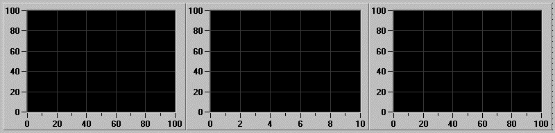

USPC-ActiveX AscanNumber.htm
Version 1.0 19 December 2001
USPC ActiveX component
version 1.0
AscanNumber
property

Description:
Returns/sets a value that
determines how A-scans are displayed.
Value:
Number of
A-scans (1 to 16)
See
also:
AscanAutoSize | Rows | Cols
Samples
Visual
Basic:
‘Show 3 A-scans on single line
Xuspc1.AscanNumber = 3
Xuspc1.Rows= 1
Xuspc1.Cols = 3
…

(ActiveX_AscanNumber.gif)